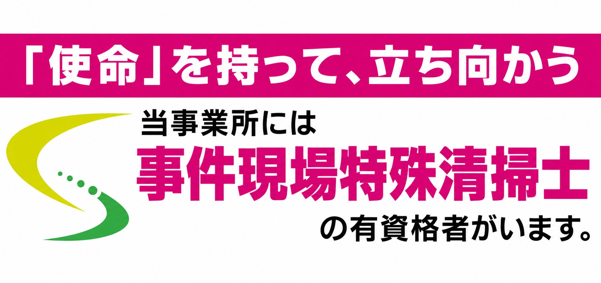
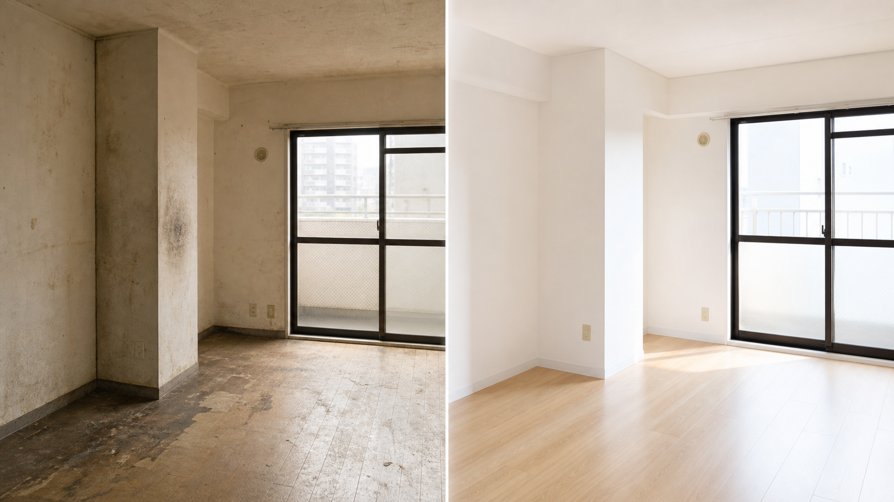
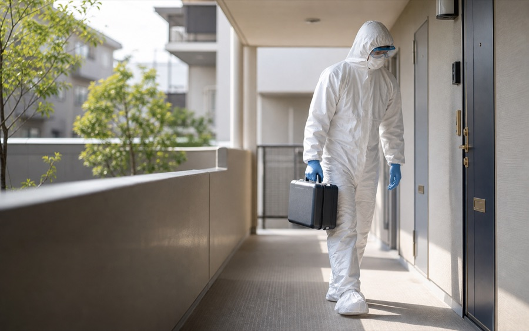
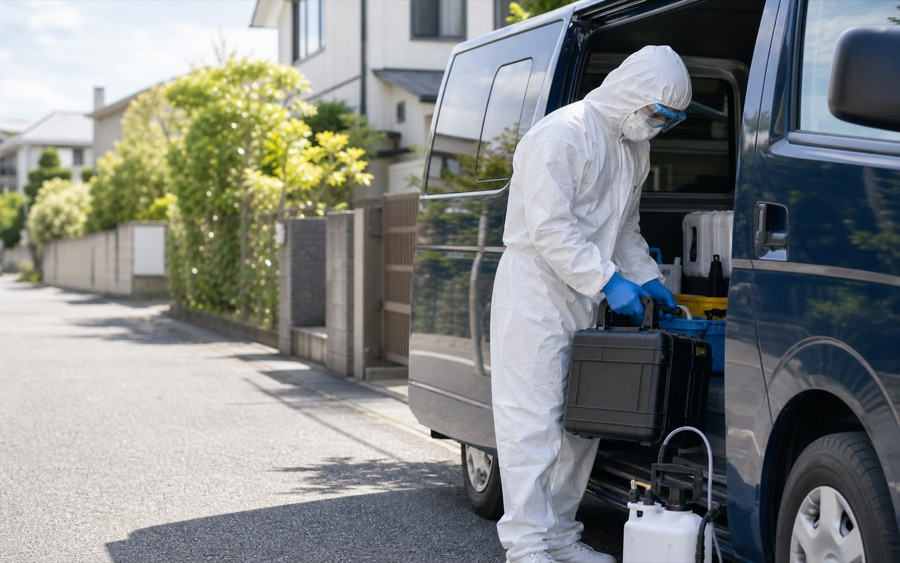
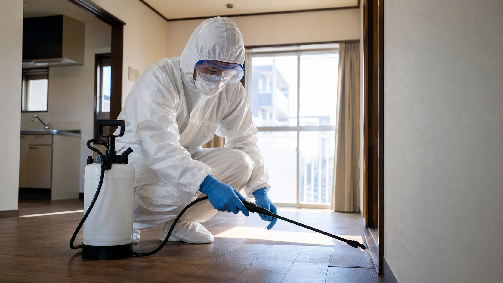

自社調べ／
住まいの
特殊清掃原状回復ハウスクリーニング
汚れも、
専門的な清掃から、
消臭・消毒・
お部屋の状態から、必要な作業を。
ご家庭・賃貸物件の

清掃・修復のお困りごとを、まずはお聞かせください
24時間365日
相談0円
出張0円
見積0円
お急ぎのご相談も、最短即日で対応します。
実績・信頼
お部屋のお困りごとに、
最短即日で
向き合います。
ご家庭から、
深夜・早朝も
加盟店

見積り後の追加請求なし
清掃・
近隣に配慮した 静かな清掃
必要に応じて社名のない車両で訪問。ご事情を

加盟スタッフが 最寄りから急行
清掃・

対応サービス
特殊清掃。原状回復。ハウスクリーニング。
お部屋の状態や

特殊清掃
孤独死・事故などの
通常の清掃では
- 汚染箇所の清掃
- 消臭・脱臭
- 消毒
原状回復
退去後のお部屋を、
室内の汚れや
- 退去後の清掃
- 壁紙・床の補修や張り替え
- 内装リフォーム
ハウスクリーニング
日々の汚れも、
キッチン・浴室・
- 水まわりの清掃
- 室内のクリーニング
- 状態に応じた消臭・消毒
消臭・消毒だけの
よくあるご質問
何を頼めばよいか、分からなくても大丈夫です。
見積もりだけでも大丈夫ですか？
はい。
消臭・消毒だけでも相談できますか？
はい。
清掃と内装リフォームをまとめて頼めますか？
はい。
ハウスクリーニングも依頼できますか？
はい。
あとから料金が増えませんか？
作業内容と金額を
近隣への配慮や、管理会社からの依頼も相談できますか？
はい。
ご依頼の流れ
ご相談から作業完了まで、 窓口ひとつで。
電話またはWEBでお困りごとを相談
特殊清掃・原状回復・
状態を確認して、作業と費用をご説明
汚れ・ニオイ・
内容にご納得後、ご依頼の作業へ
お見積りに沿って
こんなお悩みに
お部屋の状態に合う、清掃・修復をご提案。
必要な作業は、
汚れやニオイが
特殊清掃と消臭・消毒
通常の清掃では難しい
退去後の
原状回復と内装リフォーム
清掃だけでなく、
日々の汚れや
ハウスクリーニング
キッチンの油汚れや
無料相談
特殊清掃・原状回復・ハウスクリーニングのご相談は、結 清掃へ。
気になる汚れやニオイ、退去後の清掃、